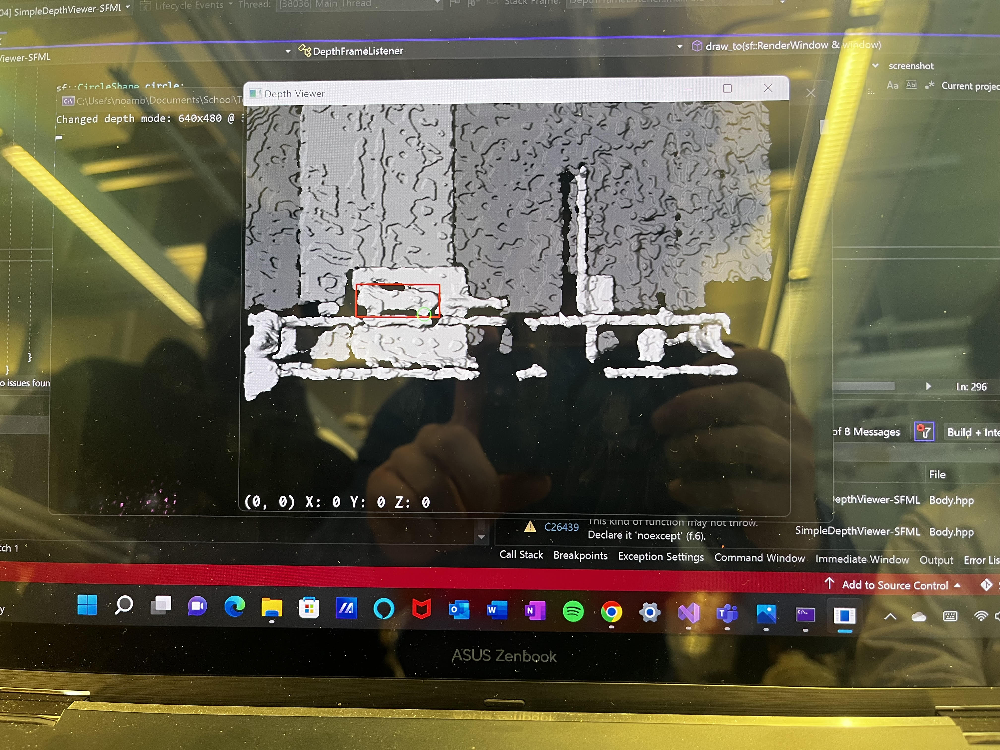

TMMC
I participated in the Toyota Innovation Challenge where I built is an autonomous machine vision algorithm in a simulated manufacturing environment. Using object-oriented programming methodologies in C++ and incorporating innovative computer vision libraries such as OpenCV, I was able to track a 1:24 scale model of a car, accurately identify its wheels, and output real-time positioning data, using a depth camera. Simulating a real-world Toyota manufacturing environment and allowing for optimal efficiency and precision in manufacturing processes. But that's not all - I also implemented an advanced event trigger system that would activate when the car reached a predetermined location, further enhancing the system's dynamic capabilities. Going so far to derive and implement a custom formula to convert between radial data interpreted from the depth camera into real world position data. Furthermore, I added a unique feature that provided real-time visual feedback by overlaying dynamic square bounding boxes around the car and a circle around the front wheel. This not only made the project easier to understand and interpret, but also greatly facilitated debugging and troubleshooting. This added feature brought an extra layer of precision and clarity to the system, making it stand out as one of the most advanced and innovative in the competition. Overall, this project was a true showcase of my skills in computer vision and OOP, and it was incredibly satisfying to see it all come together in a real-world application. It was the most challenging and rewarding experience of my career.